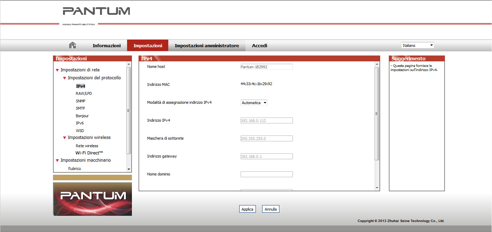

4. Impostazioni di rete cablata (per modelli di stampante in rete cablata)
Potrebbe essere necessario impostare alcuni parametri di rete sulla stampante. È possibile impostare tali parametri tramite il server Web incorporato.
4.1. Impostazione dell'indirizzo IP
L'indirizzo IP della stampante può essere ottenuto automaticamente tramite la funzione DHCP oppure impostato manualmente.
| Impostazione automatica
La funzione di impostazione automatica DHCP è attivata come impostazione predefinita della stampante.
1. Collegare la stampante alla rete tramite l'apposito cavo e completare il lavoro di preparazione all'avvio.
2. La stampante ottiene automaticamente l'indirizzo IP assegnato dal server. L'indirizzo IP ottenuto automaticamente può essere utilizzato dopo pochi minuti.
|
|
Nota:
|
• se il DHCP non riesce a ottenere automaticamente un indirizzo IP, la stampante utilizzerà l'indirizzo IP predefinito: 169.254.xx.xx.
• A seguito delle caratteristiche del DHCP, l'indirizzo IP assegnato automaticamente alla stampante dalla rete può variare se la stampante non è stata utilizzata per lungo tempo o se cambia il punto di accesso alla rete; ciò può impedire la connessione corretta alla stampante. Si raccomanda di vincolare l'indirizzo IP assegnato automaticamente dalla rete all'indirizzo Mac della stampante quando è attivata la funzione DHCP.
|
| Impostazione manuale
Digitare l'indirizzo IP nella barra degli indirizzi del browser web per aprire il server web integrato.
1. Fare clic su Impostazioni nella barra di navigazione per aprire la pagina Impostazioni.
2. Selezionare Impostazioni di rete - Impostazioni IPV4.
3. Impostare la modalità di assegnazione indirizzo IP (manuale), l'indirizzo IP e la maschera di sottorete. Le altre voci sono opzionali.
4. Fare clic su Applica per salvare le impostazioni.
4.2. Installazione della stampante sulla rete
Con questa impostazione, la stampante è collegata direttamente alla rete e può essere configurata per consentire a tutti i computer sulla rete di stampare direttamente sulla stampante.
1. Prima di accendere la stampante, collegare il cavo di rete alla porta di rete della stampante per stabilire un collegamento diretto alla rete.
2. Avviare la stampante e attendere finché l'indicatore di stato sul pannello di controllo non indica che la stampante è pronta, come mostrato nella figura sottostante.

3. Inserire il CD della stampante nel computer. Se il software di installazione non si avvia automaticamente, individuare il file “setup.exe” nel CD e fare doppio clic per eseguire il file.
4. Seguire le istruzioni del programma di installazione.
5. Continuare per completare l'installazione.
4.3. Impostazione dei prodotti di rete
4.3.1. Visualizzazione o modifica delle impostazioni di rete
È possibile utilizzare il server Web incorporato per visualizzare o modificare le impostazioni IP.
1. Tenere premuto il pulsante "Annulla/Continua" sul pannello di controllo per stampare la pagina delle informazioni di prova e visualizzare l'indirizzo IP della stampante. È possibile stampare la pagina delle informazioni di prova tenendo premuto a lungo il pulsante sul pannello di controllo (come mostrato nella figura sottostante) in stato inattivo.
2. Digitare l'indirizzo IP nella barra degli indirizzi del browser web per accedere al server web integrato.
3. Fare clic sulla scheda Impostazioni per ottenere le informazioni della rete. Modificare le impostazioni in base alle necessità.

4.3.2. Impostazione o modifica della password di accesso al server web
Utilizzare il server web incorporato per impostare una password di rete o modificare la password esistente.
|
|
Nota:
|
• il nome utente predefinito è "admin" e la password iniziale è "000000".
|
1. Per aprire il server web incorporato, è necessario eseguire prima l'accesso.
2. Fare clic sulla scheda Impostazioni amministratore.
3. Digitare la nuova password nelle caselle Password e Conferma password.
4. Nella parte inferiore della finestra, fare clic sul pulsante Applica per salvare le impostazioni.
4.3.3. Ripristino delle impostazioni di fabbrica
Se si desidera ripristinare tutte le impostazioni dei parametri della stampante, è possibile ripristinare le impostazioni di fabbrica tenendo premuto a lungo il pulsante "Annulla/Continua" quando la stampante è spenta per accenderla e tenerlo premuto per 10 secondi finché la stampante non passa allo stato di Pronta per completare l'operazione di ripristino.